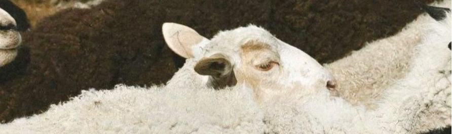

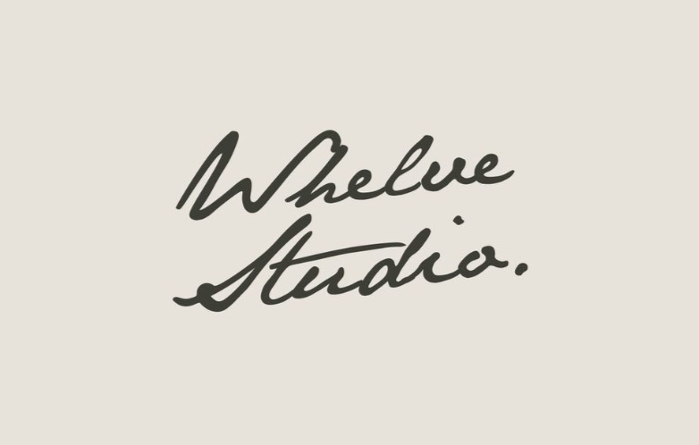

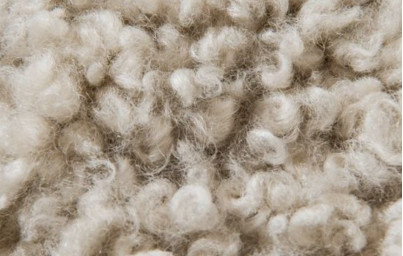

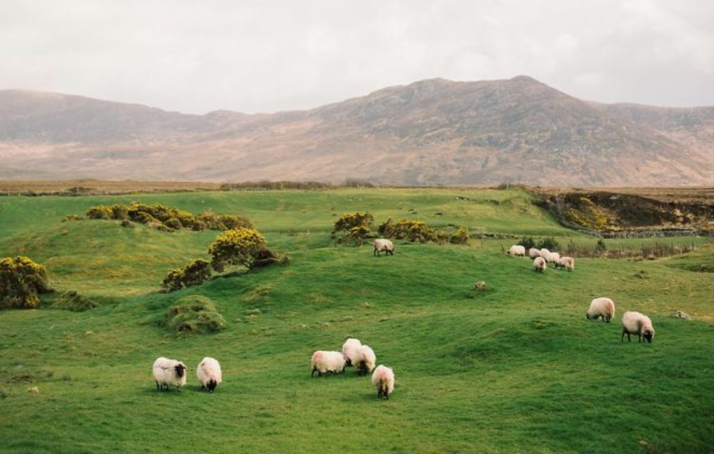

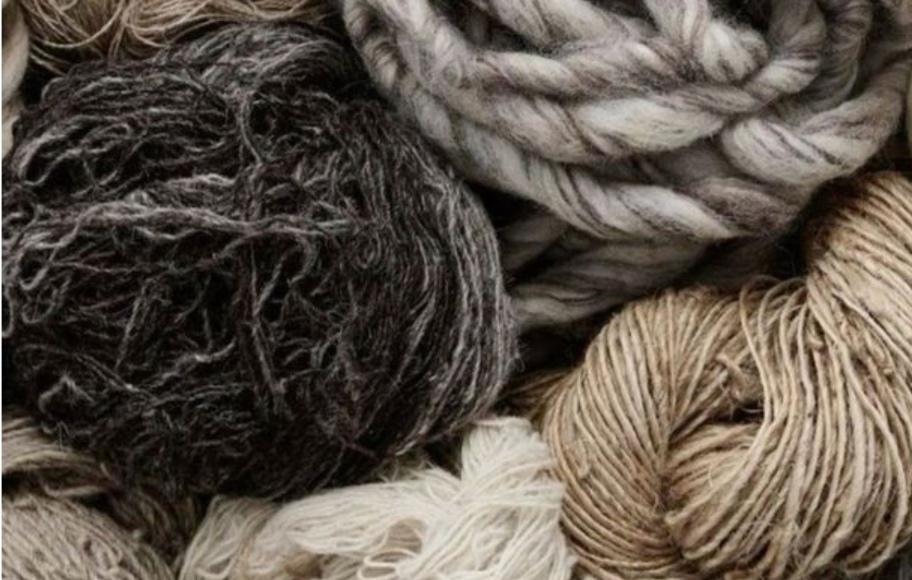

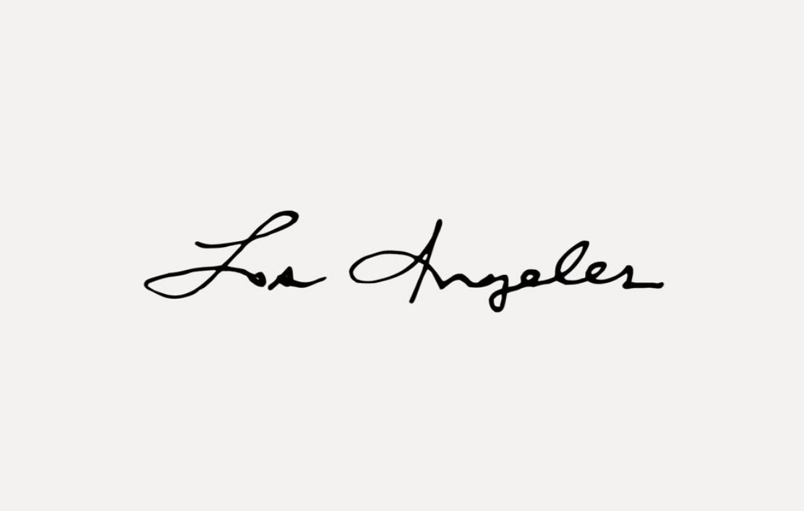
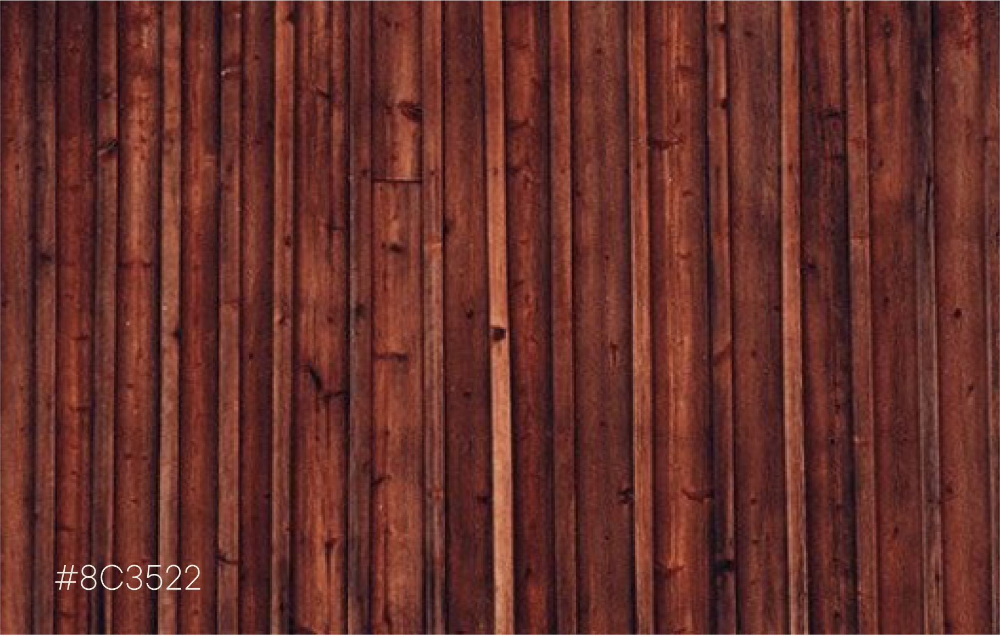
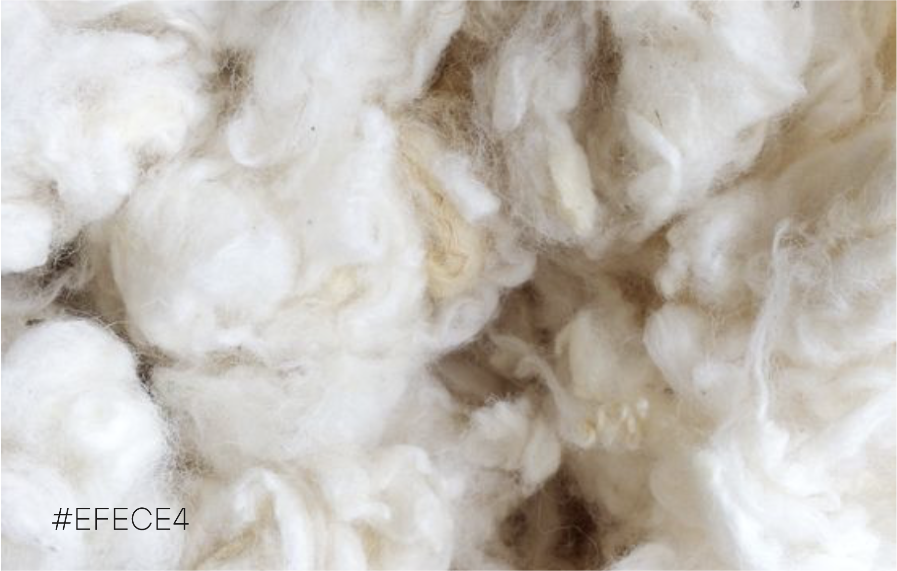
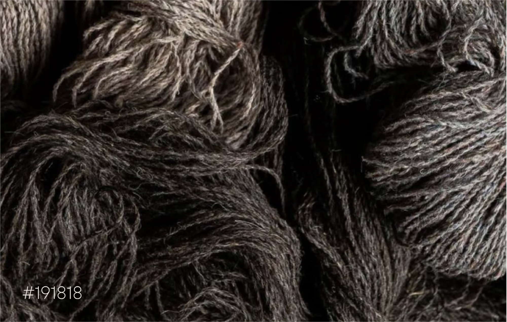
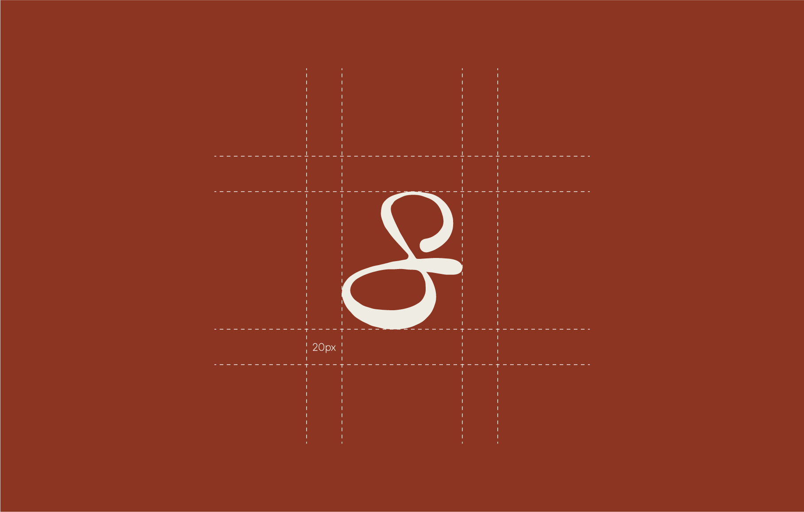
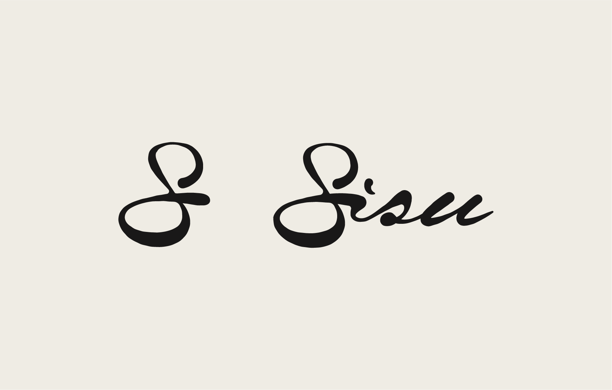
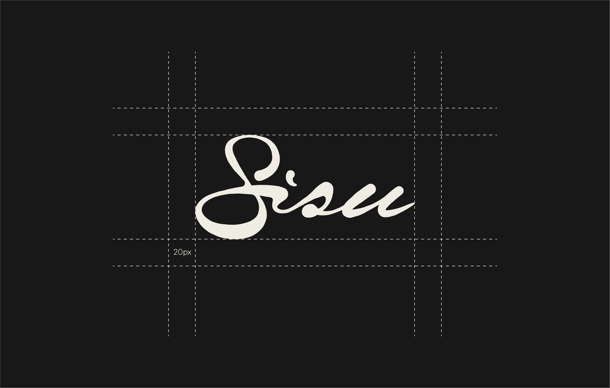


Sisu /*see-soo*/
Extraordinary determination, courage and resoluteness in the face of extreme adversity. Sisu is a family-owned sheep farm in Finland producing high-quality wool garments. The identity draws from Finnish resilience, raw northern landscapes, and tactile natural materials.
The visual identity reflects warmth, craftsmanship, and emotional connection through handwritten typography, soft natural textures, and muted earthy tones inspired by the Nordic landscape.
The colour palette combines deep red, soft wool white, and charcoal tones inspired by natural materials found on the farm. Together, they create a warm and grounded identity that feels tactile, timeless, and connected to craftsmanship. The handwritten logo and wordmark were designed to feel personal and expressive, reflecting the human touch behind each garment.